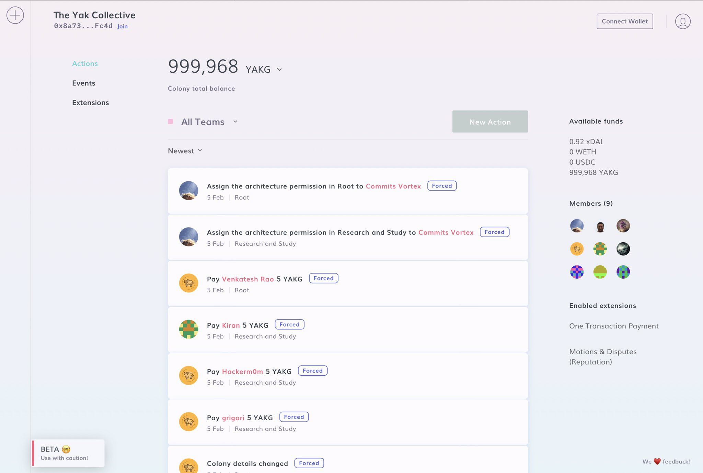
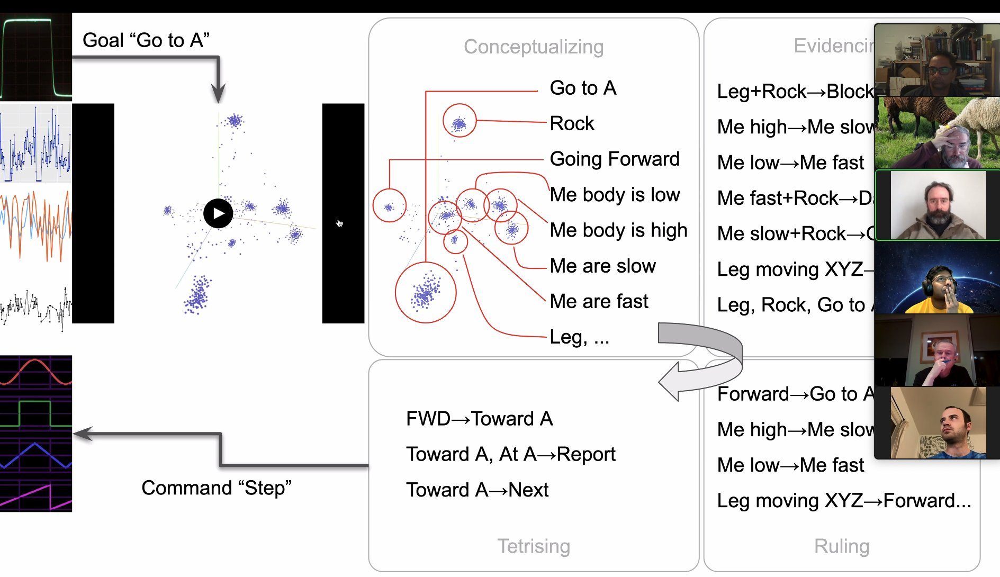

Today's featured yak: Eric Platon (@not_replica) - (GOF)AI, Consciousness, Biology, Space https://www.yakcollective.org/members/100037/#20220201
recording of Monday’s read about ethereum layer 2 ecosystem <https://ethereum.org/en/developers/docs/scaling/layer-2-rollups/> posted to YouTube https://youtu.be/lzXv85RcFgw #yakbot
Check out @randylubin's new post, "Launching the Foresight Games community and website". https://blog.randylubin.com/launching-foresight-games-community-and-website
Today's featured yak: Michael de la Maza https://www.yakcollective.org/members/100064/#20220202
Check out @antlerboy's new post, "We can ‘level up’ by transforming commissioning". https://antlerboy.medium.com/we-can-level-up-by-transforming-commissioning-ee6bf52b539c?source=rss-97852f5a56ae------2
Verifying my identity for @viamirror
sig:0x5bd10860a51d6628f1d8a0afd56f7487f92a65b4ab3255b7a92ddc8dd0311a120a6d0d4f4680975a6ea50df7e378ea0fcb3b8080721a63063092c95bd1c7413b1b
https://mirror.xyz
Check out @anthilemoon's new post, "Exploring the power of augmented intentionality with Welf von Hören, founder of Potential". https://nesslabs.com/potential-featured-tool?utm_source=rss&utm_medium=rss&utm_campaign=potential-featured-tool
Today's featured yak: Jascha https://www.yakcollective.org/members/100005/#20220203
The Yak Collective online governance study group will be on the Mirror town hall in ~30 minutes to discuss the paper we’re releasing soon https://twitter.com/viamirror/status/1489287272436580354
Today's featured yak: Jordan Allen (@quickdrawyall) - Business Development & Revenue Generation https://www.yakcollective.org/members/100055/#20220204
Replying to @not_replica, @maierfenster, @vgr and @jaschawilcox
3/ YakRover Group Discussion on OS for Rovers aka BOS up you YouTube. @maierfenster, @not_replica, @vgr, @rhettford, @anurajenp and Brian Smith try to answer -
Where does an OS for Rovers begin and end? What should an OS for Rovers do for its users?
https://www.youtube.com/watch?v=83AzBSOb4ew
Check out @antlerboy's new post, "Transduction — leading transformation — Issue #36". https://antlerboy.medium.com/transduction-leading-transformation-issue-36-f35068cbe1a9?source=rss-97852f5a56ae------2
Today's featured yak: Zhan Li (@thezhanly) - Scenarios, Foresight, Futurist Studies & PE/VC https://www.yakcollective.org/members/100072/#20220205
The Yak Collective is piloting a DAO experiment on @joincolony

Replying to @yak_collective
4/ YakRover session on "How to start Rover Robotics in Any Budget" by @anurajenp is up on YouTube
https://www.youtube.com/watch?v=ncfQBI6xQeQ
Today's featured yak: Hugo Macedo (@macedoh) - Humans are a curious subject https://www.yakcollective.org/members/100027/#20220206
Check out @antlerboy's new post, "Pathological liars: they’re out there, and we keep giving them power". https://antlerboy.medium.com/pathological-liars-theyre-out-there-and-we-keep-giving-them-power-b9e3fe703d40?source=rss-97852f5a56ae------2
Today's featured yak: Paul Millerd (@p_millerd) https://www.yakcollective.org/members/100078/#20220207
Check out @tomcritchlow's new post, "Electric Tables V0.2". http://tomcritchlow.com/2022/02/07/electric-tables-v2/
The Yak Rover project tonight will discuss the "three laws of roverics" -- inspiration from Asimov's 3 laws of robotics for rover design https://twitter.com/vgr/status/1490858088840445953
Replying to @yak_collective
If you're interested, join the Yak Collective at this link and show up at 9:45 PM Pacific Time tonight (Zoom link will be posted in the Discord) https://www.yakcollective.org/join/
Interested in the 3 Laws of Roverics? <@!692110789657755728> will frame them at the YakRover meeting. Please join us today Feb. 8th at 5:45 UTC ! #yakbot
Today's featured yak: Ben Mosior (@HiredThought) - curator of strange and interesting methods https://www.yakcollective.org/members/100080/#20220208
Recording of Monday’s group read of Moxie's My first impressions of web3 piece <https://moxie.org/2022/01/07/web3-first-impressions.html> posted to YouTube https://youtu.be/ptPF5_2yFFU #yakbot
Check out @antlerboy's new post, "Your help needed — Supporting Adult Social Care Commissioners — Strategic Commissioning Options…". https://antlerboy.medium.com/your-help-needed-supporting-adult-social-care-commissioners-strategic-commissioning-options-17436fa50dc2?source=rss-97852f5a56ae------2
Today's featured yak: Tracy Brinkerhoff https://www.yakcollective.org/members/100060/#20220209
Check out @vgr's new newsletter, "Derangements". https://studio.ribbonfarm.com/p/derangements
Today's featured yak: Jay Kalawar https://www.yakcollective.org/members/100070/#20220210
Check out @anthilemoon's new post, "Augmenting product work with Rishank Pandey, co-founder of Workduck". https://nesslabs.com/workduck-featured-tool?utm_source=rss&utm_medium=rss&utm_campaign=workduck-featured-tool
Today's featured yak: Thomas Hollands (@tdoggyholhol) - Marketing Strategy and Strategic Marketing https://www.yakcollective.org/members/100023/#20220211
excellent governance chat reading today https://vbsd.super.site/introduction-for-culture-shifters #yakbot
Check out @antlerboy's new post, "Transduction — leading transformation — Issue #37". https://antlerboy.medium.com/transduction-leading-transformation-issue-37-ca188528f564?source=rss-97852f5a56ae------2
Today's featured yak: David McDougall (@dmcdougall) https://www.yakcollective.org/members/100076/#20220212
Today's featured yak: Sumit Paul-Choudhury https://www.yakcollective.org/members/100081/#20220213
@rhettford will update on the "Stubborn Pursuit of a Path" at the YakRover meeting tomorrow. Please join us on Feb. 15th at 5:45 UTC ! #yakbot
Check out @antlerboy's new post, "Do you know a trainer, facilitator, or consultant — and how do they feel about their job?". https://antlerboy.medium.com/do-you-know-a-trainer-facilitator-or-consultant-and-how-do-they-feel-about-their-job-b1cae3f926ec?source=rss-97852f5a56ae------2
Today's featured yak: Thomas Verhagen (@thomasverhagen) https://www.yakcollective.org/members/100051/#20220214
UPDATE @rhettford will update on the "Stubborn Pursuit of a Path" at the YakRover meeting tomorrow. Please join us on Feb. 15th at 5:00 UTC ! 45 minutes earlier than previously posted #yakbot
Today's featured yak: Chris Reid (@careid0) https://www.yakcollective.org/members/100087/#20220215
Check out @antlerboy's new post, "Have you seen data, ‘best practice’, benchmarking, or ‘learning’ applied in ways which block…". https://antlerboy.medium.com/have-you-seen-data-best-practice-benchmarking-or-learning-applied-in-ways-which-block-24d27479bcb4?source=rss-97852f5a56ae------2
Today's featured yak: Maier Fenster (@maierfenster) - Distilling and then leveraging your ideas https://www.yakcollective.org/members/100020/#20220216
Check out @randylubin's new post, "Story Synth Video Tours". https://blog.randylubin.com/story-synth-video-tours
Today's featured yak: Randy Lubin (@randylubin) https://www.yakcollective.org/members/100074/#20220217
Check out @anthilemoon's new post, "Nurturing thoughtful relationships with the co-founders of Clay". https://nesslabs.com/clay-featured-tool?utm_source=rss&utm_medium=rss&utm_campaign=clay-featured-tool
Today's featured yak: Claire Peters https://www.yakcollective.org/members/100082/#20220218
divide and conquer session in the governance chat: discussing the 7 case studies in this excellent report by the platform cooperativism consortium and the berggruen institute https://ia804605.us.archive.org/20/items/policy-paper-dec-6/Policy%20Paper%20%28Dec%206.2%29.pdf #yakbot
Check out @vgr's new newsletter, "Theory-Shaped Debris". https://studio.ribbonfarm.com/p/theory-shaped-debris
Today's featured yak: Benjamin Taylor (@antlerboy) - systems | cybernetics | complexity https://www.yakcollective.org/members/100047/#20220219
The first Yak Collective NFT has dropped: the Yak Online Governance Primer on Mirror https://yakcollective.mirror.xyz/aJdO_SO3gw34cLtwBwNC2OD3s0YT3us9C-C2NNPQ_us #yakbot
Today's featured yak: Drew Shiel (@gothwalk) - Independent Domestic Historian https://www.yakcollective.org/members/100090/#20220220
Check out @antlerboy's new post, "Why is being in the wrong frame so hilarious? And what are the implications for business?". https://antlerboy.medium.com/why-is-being-in-the-wrong-frame-so-hilarious-and-what-are-the-implications-for-business-a892b4752d86?source=rss-97852f5a56ae------2
Today's featured yak: Jenna Dixon (@jdbb) - communications & digital operations https://www.yakcollective.org/members/100018/#20220221
Today's featured yak: Nita Baum (@bfree_live) https://www.yakcollective.org/members/100058/#20220222
Yak Rover meeting, @not_replica presenting on his automated concept learning for robots, bsaed on sensor data.

Replying to @vgr and @not_replica
This is how Eric's tank rover internally thinks of changing data... inception style concept rendering directly from sensor data. This tankroid dreams of electric icosahedrons. Sheep coming next.

Replying to @vgr and @not_replica
The idea here, beyond fun, is to render data states in a way that is suitable as input to machine learning... the shape grows bigger when disk starts getting full in this case. Can do high-dimensional states.
Today's featured yak: Pamela Hobart (@amelapay) - Philosopher, Mother of 3 https://www.yakcollective.org/members/100068/#20220223
Check out @antlerboy's new post, "What does seeing the different worlds that make up an organisation show you?". https://antlerboy.medium.com/what-does-seeing-the-different-worlds-that-make-up-an-organisation-show-you-cb25cb4eea49?source=rss-97852f5a56ae------2
Check out @anthilemoon's new post, "Scaling peer-to-peer learning with Jennifer Smith, founder of Scribe". https://nesslabs.com/scribe-featured-tool?utm_source=rss&utm_medium=rss&utm_campaign=scribe-featured-tool
Today's featured yak: Shreeda Segan (@freeshreeda) - Design Thinker & Writer https://www.yakcollective.org/members/100044/#20220224
Replying to @yak_collective
5/ Check out the great session "Newbots: A new era of Robotics" by @jaschawilcox for YakRover meetup on YouTube
Don't forget to subscribe: https://bit.ly/3BLYCsr
https://youtu.be/cs44U8R33uk
Today's featured yak: Mike Wimsatt https://www.yakcollective.org/members/100093/#20220225
Check out @vgr's new newsletter, "Teeth and Identity". https://studio.ribbonfarm.com/p/teeth-and-identity
Today's featured yak: Sachin Benny (@sachinb91) https://www.yakcollective.org/members/100013/#20220226
Today's featured yak: Chris Clark (@chrisclark1729) - Freelance Data Projects https://www.yakcollective.org/members/100061/#20220227
Check out @antlerboy's new post, "Transduction — leading transformation — Issue #39". https://antlerboy.medium.com/transduction-leading-transformation-issue-39-e8d572eb46ff?source=rss-97852f5a56ae------2
Today's featured yak: Amanda Reeves (@WabiSabiFutures) https://www.yakcollective.org/members/100086/#20220228
@sai_prasanna will present his research plans on Reinforcement Learning for Robotics at the YakRover meeting this week. Please join us on March 1st at 5:00 UTC ! #yakbot